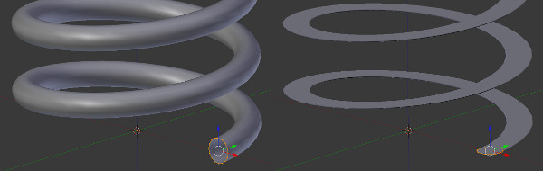
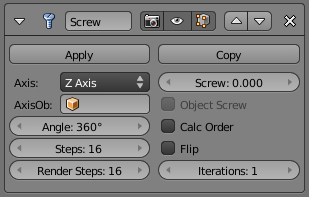

螺旋修改器¶
The Screw Modifier is similar to the Screw tool in the Tool Shelf in that it takes a profile object, a Mesh or a Curve, to create a helix-like shape.

{kind=link}
Properly aligning the profile object is important.
外形应该恰当地对齐到物体的基向而不是螺旋轴。
选项¶

Screw Modifier.
- 轴向
沿其将建立螺旋轴。
- 螺旋
- 一次螺旋迭代器的高度。
- Axis Object
用来定义轴向的物体的名字
- 物体螺旋
- Use the distance from the Axis Object to define the height of one helix iteration.
- 角度
- 单个螺旋旋转的角度。
- 步进
- Number of steps used for a single revolution displayed in the 3D View. Beware of setting this higher than Render Steps, which is the value used for rendering.
- 渲染步骤
- 跟上面一样，但是会在渲染期间使用。增加该值可以提升渲染质量。
- 平滑着色
- 采用光滑着色而不是平坦着色来输出面。输入几何形体的光滑、平坦着色不被保留。
- 计算顺序
- 计算边的顺序，可以避免法线和着色的问题。仅网面需要计算，曲线不需要。
- 翻转
- 翻转法线方向。
- 迭代
- 迭代次数。
- 伸展UV
- Stretch the UV coordinates from (0.0 to 1.0) when UVs are present.
- Merge Vertices
- Merge vertices that lie on the axis of rotation. Use this to close off end-points with a triangle fan.
- Merge Distance
- Vertices under this distance to the axis are merged.